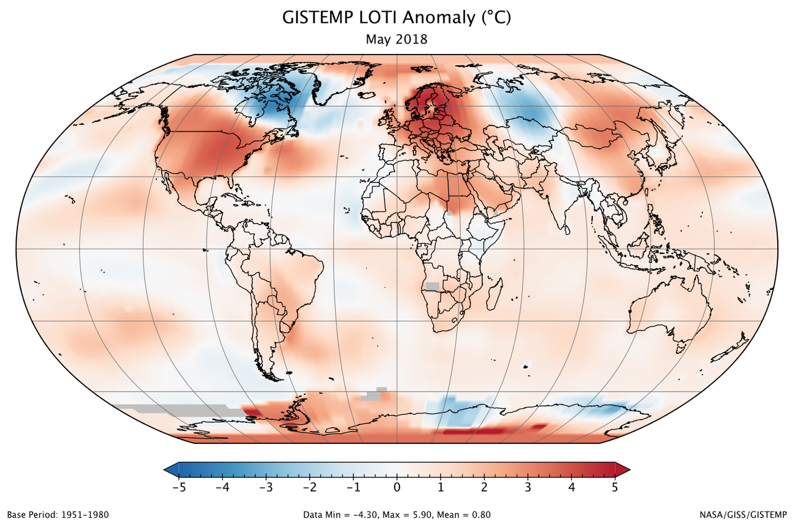

OVERVIEW
Earth's climate is changing.
Multiple lines of evidence show changes in our weather, oceans, ecosystems, and more. Natural causes alone cannot explain all of these changes. Human activities are contributing to climate change, primarily by releasing billions of tons of carbon dioxide (CO2) and other heat-trapping gases, known as greenhouse gases, into the atmosphere every year. Climate changes will continue into the future. The more greenhouse gases we emit, the larger future climate changes will be.
Natural causes alone
cannot explain recent changes. Natural processes such as changes in the sun's energy, shifts in ocean currents, and others affect Earth's climate. However, they do not explain the warming that we have observed over the last half-century.

Human causes CAN
explain recent changes. Most of the warming of the past half century has been caused by human emissions of greenhouse gases.
Greenhouse gases come from a variety of human activities, including: burning fossil fuels for heat and energy, clearing forests, fertilizing crops, storing waste in landfills, raising livestock, and producing some kinds of industrial products.
Greenhouse gas emissions
are not the only way that people can change the climate. Activities such as agriculture or road construction can change the reflectivity of Earth's surface, leading to local warming or cooling. This effect is observed in urban centers, which are often warmer than surrounding, less populated areas. Emissions of small particles, known as aerosols, into the air can also lead to reflection or absorption of the sun's energy.